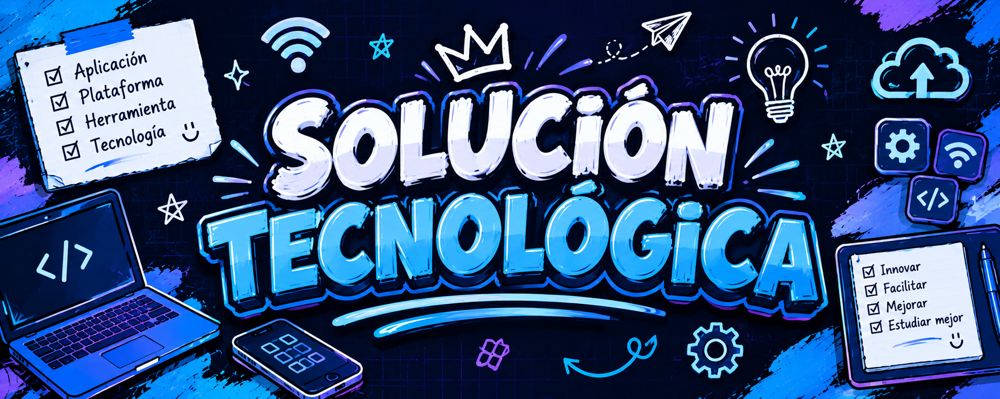
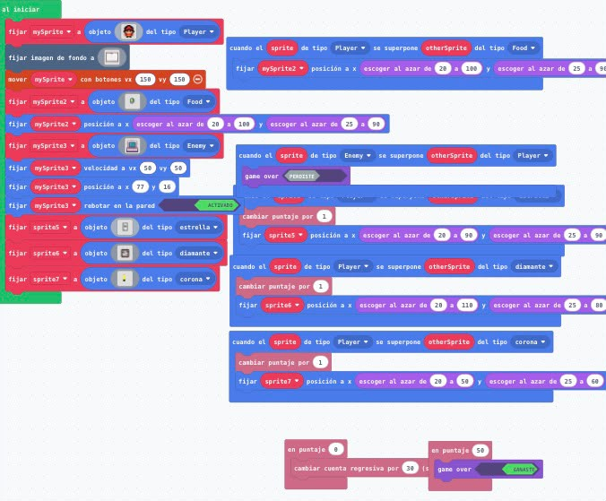
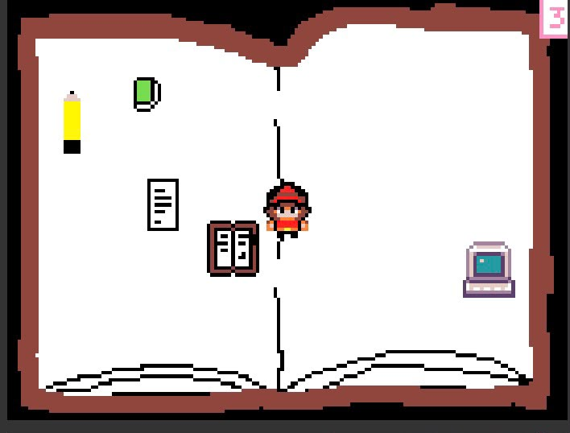

La idea fue crear un videojuego educativo que represente la organización de tareas y la gestión del tiempo. Queríamos mostrar cómo cumplir objetivos de forma ordenada y evitar las distracciones que nos alejan de nuestras metas.


El jugador se mueve con las flechas del teclado dentro de un cuaderno abierto. Debe recoger elementos útiles como el lápiz, el cuaderno y la computadora, que representan las tareas. También debe evitar las distracciones y enemigos. Cada tarea completada suma puntos.
📱 Escanea para jugar
El juego convierte un tema serio en algo divertido y fácil de entender. Ayuda a ver de forma sencilla cómo organizar nuestras prioridades y qué cosas nos distraen. Es una forma de aprender buenos hábitos sin que se sienta como una clase aburrida.
El videojuego es una gran herramienta para aprender a organizarse. Combina entretenimiento con un mensaje claro: que cumplir nuestras tareas y evitar distracciones nos ayuda a alcanzar nuestras metas. Demuestra que se puede aprender de forma dinámica.